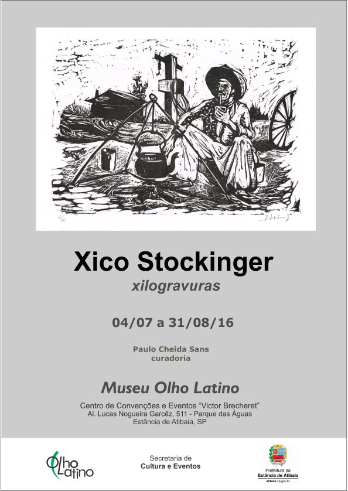

Hélio Schonmann é o artista convidado para o Sarau Cultural na Chácara Olho Latino

Hortolândia: O Museu Olho Latino apresenta o artista plástico Hélio Schonmann para a realização do 2º Sarau Cultural de Artes Visuais que acontece em 27 de agosto, às 14h, em sua sede de extensão em Hortolândia.
Com o intuito de mostrar e propor reflexões sobre a arte contemporânea, Hélio estará expondo algumas de suas pinturas e gravuras e fará uma palestra enfocando a sua produção e experiência artística. O artista construirá uma instalação e falará também de sua recente participação na mostra “Mais que Humanos. Arte do Juquery” que está em exposição no Museu Emílio Ribas em São Paulo.
Para o coordenador do evento, Paulo Cheida Sans, o objetivo do Sarau é o de apresentar Hélio em suas várias facetas de criação, como curador, professor de Artes e artista visual de modo autêntico e espontâneo.
Hélio Schonmann é artista visual e professor. Frequentou, nos anos 70 e 80, o Atelier de Livre Criação em Artes Plásticas do Museu Lasar Segall, em São Paulo, onde assumiu posteriormente o cargo de orientador (1979/83). No final dos anos 90, incorporou a instalação e a gravura em seu fazer artístico, tendo recebido orientação de Evandro Carlos Jardim. Realizou mostras individuais e vem participando de mostras coletivas e trabalhos colaborativos de arte urbana no Brasil, Argentina, Alemanha, Itália, China, Cuba, México e França. Sua obra está presente no acervo de instituições públicas e privadas, como Pinacoteca do Estado de São Paulo, Museu de Arte Contemporânea de Botucatu, Museu Olho Latino (Atibaia), entre outros. A partir de 2009 iniciou um trabalho de coordenação de projetos de arte pública colaborativa e curadoria dos ciclos de mostras coletivas VI(VER), duplamente premiados pelo ProAC SP. Reside e trabalha atualmente na cidade de Louveira, SP.
O sarau “Hélio Schonmann” acontece no dia 27 de agosto, das 14h às 17h, na Chácara Núcleo de Arte Olho Latino, situado na Av. das Melissas, 357, no Jardim Boa Vista em Hortolândia, SP. O evento é destinado aos artistas, promotores culturais e professores de Arte. É gratuito e aberto ao público interessado.
Exposição Sarau: “Hélio Schonmann: pinturas, gravuras e instalação”
Período da apresentação: 27 de agosto, das 14h às 17h.
Local: Chácara Núcleo de Arte Olho Latino.
Endereço: Av. das Melissas, 357 – Jardim Boa Vista - Hortolândia, SP.
fonte: Portal Olho Latino
Museu Olho Latino expande o seu Núcleo de Arte em nova sede

Alex Roch - Ação Performática.
Hortolândia: O Museu de Arte Olho Latino, dirigido pelos professores artistas Paulo Cheida Sans e Celina Carvalho, amplia o seu campo de ação cultural, fixando sua sede educativa e de extensão no município de Hortolândia, SP. O museu tem sede de exposições na cidade de Atibaia, SP, desde 2006, onde mantém a realização de mostras periódicas de importantes artistas na área da gravura.
Com o intuito de expandir a sua área de ação para o campo da extensão e da arte no campo da experimentação, o Museu abre no dia 30 de julho a sua sede experimental na Chácara Núcleo de Arte Olho Latino em Hortolândia, SP. Para inaugurar esse novo espaço cultural, o Museu irá apresentar o seu mais recente projeto que é “O Espantalho que não mente”, expondo peças escultóricas de técnicas mistas de 17 artistas que compõem o seu grupo de arte. Todos os artistas possuem formação em Artes e são profissionais na área, a maioria artistas professores e também alguns artistas tatuadores. O grupo efetivo é formado pelos seguintes artistas: Alex Roch, Celina Carvalho, Cibele Marion Sisti, Maricel Fermoselli, Paulo Cheida Sans, Suely Arnaldo e Walcirlei Siqueira. Como convidados para este projeto participam também os seguintes artistas: Convidados: Ana Cominal, Ândrea Borges, Bruno NITZ, Daniel Inoue, Dink, Gabriela Sala, Jana Richardi, Lari Leite, Tiago Emanuel e Tiago Rego. Todos os artistas residem em cidades da Região Metropolitana de Campinas.
Para o curador do Museu Olho Latino, Paulo Cheida Sans, “é importante que a ação cultural de extensão do Museu Olho Latino aconteça em espaço polivalente para promover saraus e experimentações como performances e instalações artísticas”. Desse modo o Museu Olho Latino continua mantendo a sua excelência enquanto espaço que valoriza a arte da gravura, expondo parte de seu acervo em mostras na cidade de Atibaia, e também passa a abranger de modo mais constante os questionamentos sobre a arte contemporânea.
Nesse novo espaço estão previstos encontros com especialistas, curadores e artistas que valorizam a arte da gravura em sintonia com ideias experimentais e atuais.
O Museu Olho Latino tem em suas realizações mostras memoráveis, como as Bienais de Gravura, as Bienais do Esquisito, e as exposições Grabados & Gravuras, que valorizam a gravura contemporânea. Mostra o seu acervo de modo parcial em exposições itinerantes, como a "Xilo Internacional", realizada pelo Conjunto Cultural da Caixa em São Paulo, Rio de Janeiro, Brasília e Salvador. Entre inúmeras mostras realizadas no Brasil e no exterior, o Museu Olho Latino é uma instituição cultural que tem se destacado pela qualidade de suas mostras.
A apresentação do projeto “O Espantalho que não mente” acontece no dia 30 de julho, das 14h às 17h, na Chácara Núcleo de Arte Olho Latino, situado na Av. das Melissas, 357, no Jardim Boa Vista em Hortolândia, SP. A entrada será somente para convidados.

Exposição: “O Espantalho que não mente” – Grupo Olho Latino e convidados.
Expositores: Grupo Olho Latino: Alex Roch, Celina Carvalho, Cibele Marion Sisti, Maricel Fermoselli, Paulo Cheida Sans, Suely Arnaldo e Walcirlei Siqueira. Convidados: Ana Cominal, Ândrea Borges, Bruno NITZ, Daniel Inoue, Dink, Gabriela Sala, Jana Richardi, Lari Leite, Tiago Emanuel e Tiago Rego.
Curadoria: Paulo Cheida Sans.
Período da apresentação da proposta: 30 de julho de 2016, das 14h às 17h.
Local: Chácara Núcleo de Arte Olho Latino.
Endereço: Av. das Melissas, 357 – Jardim Boa Vista - Hortolândia, SP.
fonte: Portal Olho Latino
Museu Olho Latino expõe xilogravuras de um dos principais artistas da Arte Moderna Brasileira

"Gaúcho Chimarreando" - Xilogravura - 1956 (reimpressa em 2008)
Atibaia: A mostra “Xilogravuras” do artista plástico Xico Stockinger está em exposição de 04 de julho a 31 de agosto no Museu Olho Latino, situado no 1º andar do Centro de Convenções e Eventos “Victor Brecheret”, em Atibaia, SP. A curadoria é do prof. Dr. Paulo Cheida Sans.
A exposição é composta por gravuras do artista que foram doadas pelo MARGS - Museu de Arte do Rio Grande do Sul “Aldo Malagoli” - para a coleção do Museu Olho Latino. As obras foram realizadas nas décadas de 50 e 60 e correspondem à reedição impressa das matrizes originais feita em 2008 e 2009.
Francisco Stockinger, conhecido como Xico Stockinger, nasceu na Áustria em 1919, radicou-se no Brasil em 1922 e veio a se naturalizar brasileiro em 1956. No Brasil, residiu inicialmente no Rio de Janeiro e viveu a partir de 1950 em Porto Alegre, onde morreu aos 89 anos em 2009. Stockinger começou a realizar esculturas no Rio de Janeiro e fez aprendizado com Bruno Giorgi de 1947 a 1950. Conviveu com nomes do modernismo brasileiro, como Di Cavalcanti, Milton Dacosta e Iberê Camargo. O artista, além de ser um dos principais escultores modernos brasileiros, foi também gravurista, fotógrafo, chargista, artista gráfico e gestor cultural, sendo uma das personalidades brasileiras de maior destaque no mundo das artes.

Xico Stockinger
Stockinger foi diretor-executivo do Museu de Arte do Rio Grande do Sul e figura no acervo deste Museu, do Museu Nacional de Belas Artes, do Museu de Arte Contemporânea da Universidade de São Paulo e do Museu de Arte de Belo Horizonte. Recebeu prêmios do Salão Nacional de Belas Artes, Salão Câmara Municipal do Distrito Federal, Salão Câmara de Porto Alegre, Salão Nacional de Belas Artes de Belo Horizonte, Salão Paulista de Arte Moderna, Spar/ Bahia, entre outros. Participou, dentre inúmeras mostras, das VI, VII, VIII Bienal Internacional de Arte de São Paulo (1961, 63 e 65) e representou o Brasil na Bienal de Carrara, Itália, em 1962.
Recebeu, entre outras distinções, o título de cidadão honorário de Porto Alegre em 1994 e o prêmio na área de artes plásticas outorgado pelo Ministério da Cultura em 1997. Recebeu também a Medalha do Governo do Estado da Prefeitura Municipal de Porto Alegre, em 1999, pela sua importância na arte brasileira.
É de autoria de Stockinger com Eloisa Tregnago um conjunto de duas esculturas de bronze, obra pública famosa em Porto Alegre, que faz parte do Monumento à Literatura situada na Praça da Alfândega desde 2001. As peças representam Carlos Drummond de Andrade, em pé, lendo para Mário Quintana, que está sentado em um banco.
Xico Stockinger é considerado um dos maiores artistas plásticos brasileiros, responsável, ao lado de grandes mestres escultores como Sérgio Camargo, Amílcar de Castro e Franz Weissmann, pelo avanço e consolidação da arte moderna e contemporânea no país.
Para o curador Paulo Cheida, o Museu Olho Latino se sente honrado em poder mostrar obras da magnitude de um artista imortal como Xico Stockinger que é, sem dúvida, considerado pelos críticos, como um dos principais artistas do país, dado a importância de seu legado artístico.
A mostra “Xilogravura” do artista plástico Xico Stockinger pode ser visitada até 31 de agosto, de segunda a sexta-feira, das 9h às 17h, na Al. Lucas Nogueira Garcêz, 511, Parque das Águas, na Estância de Atibaia, SP. A realização da mostra é do Museu Olho Latino e da Secretaria de Cultura e Eventos.

(clique na imagem para ampliar)
{kind=link}
Exposição: “Xilogravuras” – do artista plástico Xico Stockinger.
Curadoria: Paulo Cheida Sans.
Período da mostra: 04 de julho a 31 de agosto de 2016.
Visitação: de segunda a sexta-feira, das 9h às 17h.
Local: Museu Olho Latino.
Endereço: Al. Lucas Nogueira Garcêz, 511 - Estância de Atibaia, SP.
fonte: Portal Olho Latino
Museu Olho Latino comemora 15 anos com mostra de Paulo Cheida, Celina Carvalho e Grupo Olho Latino
Veja o vídeo de abertura da mostra "Focos Antológicos" de Paulo Cheida Sans, Celina Carvalho e Grupo Olho Latino no MAC Campinas na comemoração dos 15 anos do Museu Olho Latino. Saiba mais sobre o evento!
Exposição: Olho Latino: Focos Antológicos
a) “Lampejos Atemporais” de Paulo Cheida Sans;
b) “Resquícios” do Grupo de Arte Olho Latino (Alex Roch, Celina Carvalho, Cibele Marion Sisti, Lisa França, Maricel Fermoselli, Paulo Cheida Sans, Suely Arnaldo, Walcirlei Siqueira e Young Koh);
c) “O Guardião das Sombras” de Celina Carvalho.
Curadoria da mostra: Paulo Cheida Sans.
Abertura da mostra: 18 de fevereiro, às 20h.
Período da mostra: 18 de fevereiro a 27 de março de 2016.
Local: Museu de Arte Contemporânea “José Pancetti”
Endereço: Rua Benjamin Constant, 1633, Centro, Campinas.
Horário de visitação: de terça a sábado, das 10h às 18h, quinta das 10h às 22h e domingos e feriados das11h às 15h. Entrada gratuita.
Organização e apoio: Museu Olho Latino.
Realização: MAC Campinas e Secretaria de Cultura da Prefeitura de Campinas.
Grupo Olho Latino comemora 20 anos de existência com a mostra "Resquícios"
 Vista parcial da mostra "Resquícios" do Grupo Olho Latino.
Vista parcial da mostra "Resquícios" do Grupo Olho Latino.
Campinas: O Grupo Olho Latino comemora 20 anos de existência com a mostra “Resquícios” que faz parte do evento "Olho Latino: Focos Antológicos", que está em exposição até 27 de março no Museu de Arte Contemporânea de Campinas.
A mostra inicial “Papel Latino” aconteceu na Galeria da Casa da Cultura da América Latina da Universidade de Brasília em 1996. De lá para cá o grupo expôs assiduamente em várias cidades brasileiras e no exterior. Vários artistas integraram o grupo, no entanto, embora alguns estejam desde a primeira mostra, a formação atual da equipe sem a entrada de novos integrantes vem desde 2004. Atualmente o grupo é formado por: Alex Roch, Celina Carvalho, Cibele Marion Sisti, Lisa França, Maricel Fermoselli, Paulo Cheida Sans, Suely Arnaldo, Walcirlei Siqueira e Young Koh.
A exposição “Resquícios” apresenta obras que lembram algumas passagens desse grupo em eventos do Museu Olho Latino ao longo do tempo e também algumas instalações inéditas que têm a gravura como germe criativo, que transmite a “marca” fundamental de criação individual para a construção coletiva.

Grupo Olho Latino.
"Olho Latino: Focos Antológicos" é uma mega exposição que comemora os 15 anos de existência do Museu de Arte Contemporânea Olho Latino, fundado pelo casal de artistas e professores Celina Carvalho e Paulo Cheida Sans, em 2001. Juntamente com a mostra "O Guardião das Sombras" de Celina Carvalho, o evento traz mais duas mostras: "Lampejos Atemporais" de Paulo Cheida Sans, que comemora 40 anos de carreira, e "Resquícios" do Grupo Olho Latino, que comemora 20 anos de existência.
Para saber mais sobre "Olho Latino: Focos Antológicos", que traz mais de 100 obras para o MAC de Campinas, confira o release completo aqui.
Olho Latino: Focos Antológicos pode ser visitada até 27 de março, no Museu de Arte Contemporânea “José Pancetti”, localizado à Rua Benjamin Constant, 1633, Centro, em Campinas, de terça a sábado, das 10h às 18h, quinta das 10h às 22h e domingos e feriados das11h às 15h.

(clique no convite para ampliar a imagem)
fonte: Portal Olho Latino
Portal Olho Latino